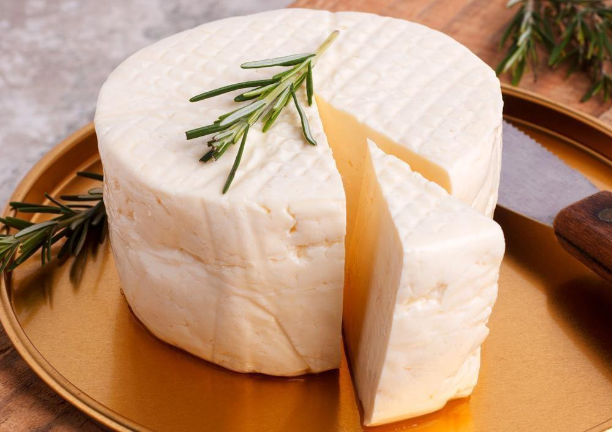

Convite Especial para a Feira Gastronômica
Você é nosso convidado especial para uma experiência única de sabores e aromas!
Venha desfrutar de pratos incríveis, preparados por chefs renomados e talentos locais. Teremos opções para todos os gostos: culinária regional, internacional, vegan, doces artesanais e muito mais!

Feijão tropeiro

Pamonha

Queijo

Feira Gastronômica 2025
Data: 10 a 12 de junho
Horário: Das 11h às 22h
Local: Praça Central da Cidade
Além da comida deliciosa, aproveite música ao vivo, oficinas culinárias e atividades para toda a família.
Não perca essa festa dos sentidos! Traga amigos e familiares para celebrar a cultura e a gastronomia conosco. Esperamos por você!